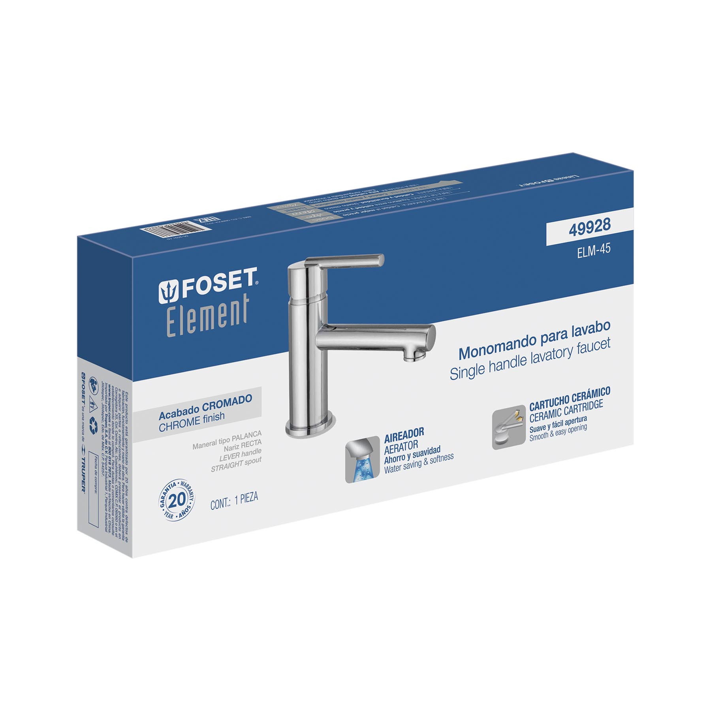

Grifo para lavatorio

Elemento que regula el caudal y la temperatura del agua, según el modelo. Se ofrece en distintos diseños y acabados y debe ser compatible con el lavatorio, las conexiones y la presión disponible.